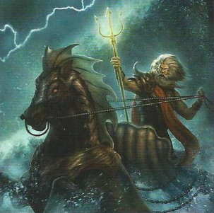

В Мире Снов, на страшном плато Ленту, среди руин легендарного города Саркоманда, можно найти загадочный бездонный провал, который охраняют безмолвные каменные изваяния — крылатые львы из диорита. Этот страшный провал — вход в неизведанную бездну, где в кромешной темноте неустанно снуют ночные призраки. Они неумолимы для своих жертв, которых хватают и относят в долины Пнота на съедение бхолам.
А Повелителем ночных призраков и Великой Бездны является древний Ноденс. Известно, что он не друг Иным богам, а его безликие слуги враждуют с шантаками. Древний Ноденс очень могущественен и не зря носит титул Повелителя Великой Бездны. Он помог Рэндольфу Картеру вырваться из лап самого Ньярлатхотепа и спас от таинственных сил Томася Олни и хозяина загадочного дома на туманном утесе, взяв их с собой в сказочное путешествие.
Грозный седой старик, Ноденс путешествует на великолепном кортеже, правя дельфинами, будто лошадьми, и используя гигантскую раковину, словно экипаж. В его свите служит множество дивных существ – тут и морской бог Нептун, и нереиды, и тритоны.
Ноденс упоминается Г. Ф. Лавкрафтом в рассказе «Загадочный дом на туманном утесе» (The Strange High House in the Mist, 1926) и повести «Сновидческие искания неведомого Кадата» (The Dream-Quest of Unknown Kadath, 1927)
